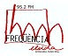

Producció
Generalitat de Catalunya
Departament d'Ensenyament
Servei d'Ensenyament del Català
i Àrea de Tecnologies per a l'Aprenentatge i el Coneixement
Coordinació i disseny d'activitats
Josep Pi i Mallarach
Programa JClic
Francesc Busquets i Burguera
Desenvolupament de les activitats
Maria Areny i Busquets
Lluïsa Bruch i Salada
Josep Pi i Mallarach
Montserrat Torra i Puigdellívol
Versió algueresa
Luca Scala
Assessorament lingüístic català nord-occidental
Imma Creus i Bellet
Joan Julià i Munné
Disseny gràfic, animació i dibuixos
GANG, estudi multidisciplinari
Veus català central
Neus Sendra i Gubianes
Carles Martínez i Davó
Enregistraments sonors del curs audiovisual
Digui Digui.
Veus català nord-occidental
Oriol Bosch i Muntañés
Enric Brascó i Baiges
Gisela Gardeñes i Forns
Enric Pinyol i Leal
Romina Rodríguez i Bañeres
Cristina Rodríguez i Orgaz
Veus versió algueresa
Aldo Dore
Maria Antonieta Martínez
Anna Scala
Luca Scala
Veus versió occitana
Montserrat Pedarrós Delaurens
Postproducció de so
Joan Domènec Andrés i Magallón
Francesc Solsona i Roca
Jordi Cosó Vallès

L'enregistrament de la versió nord-occidental ha tingut la col·laboració de l'emissora de ràdio Freqüència Lleida, que ha cedit els seus estudis i suport tècnic.
Referències
Part de les activitats són adaptació del curs audiovisual Digui Digui i han estat reproduïdes amb l'autorització corresponent.
La majoria de les activitats incloses en el GALÍ són de creació específica per al projecte, però unes poques han estat adaptades de les fitxes dels Centres d’autoaprenentatge de llengua catalana, extretes dels següents llibres de text i de consulta que es poden trobar al mercat:
- Badia, D. i altres (1985)
Llibreta autocorrectiva de vocabulari
Vic: Eumo Editorial - Fargas, A. i altres (1979-91)
Llibretes d’exercicis autocorrectius (1-5)
Vic: Eumo Editorial - Mas, M. i altres (1984)
Digui Digui
Barcelona: Publicacions de l’Abadia de Montserrat i Enciclopèdia Catalana